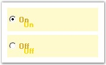
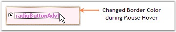
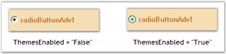
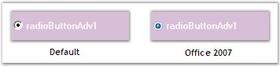
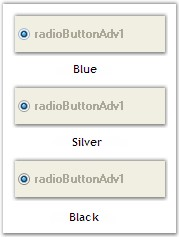

The following topics will help you become more familiar in using the RadioButtonAdv control.
This section discusses the various states of the RadioButtonAdv control and the method of associating values with the states.
It includes the below given topics.
3.3.11.2.3.1.1 RadioButtonAdv States
The RadioButtonAdv can be displayed in two different states which have been described below.
|
RadioButtonAdv Property |
Description |
|
Checked |
Gets / sets the check state of the RadioButton. |
|
[C#]
this.radioButtonAdv1.Checked = true; |
|
[VB.NET]
Me.radioButtonAdv1.Checked = True |
Figure 631: Check States
See Also
RadioButtonAdv Values, Image Settings, RadioButtonAdv Events
3.3.11.2.3.1.2 RadioButtonAdv Values
This section discusses how values can be associated with the various check states.
Both integer and string values can be associated with the check states as follows.
|
RadioButtonAdv Properties |
Description |
|
CheckedInt |
Specifies the integer value when checked. |
|
CheckedString |
Specifies the string value when checked. |
|
UncheckedInt |
Specifies the integer value when Unchecked. |
|
UncheckedString |
Specifies the string value when Unchecked. |
|
IntValue |
Gets / sets checked RadioButtonAdv in current container according to the TabIndex. |
|
[C#]
this.radioButtonAdv1.CheckedInt = 3; this.radioButtonAdv1.CheckedString = "RadioButtonAdv is Checked"; this.radioButtonAdv1.UncheckedInt = 3; this.radioButtonAdv1.UncheckedString = "RadioButtonAdv is Unchecked"; this.radioButtonAdv1.IntValue = 5; |
|
[VB.NET]
Me.radioButtonAdv1.CheckedInt = 3 Me.radioButtonAdv1.CheckedString = "RadioButtonAdv is Checked" Me.radioButtonAdv1.UncheckedInt = 3 Me.radioButtonAdv1.UncheckedString = "RadioButtonAdv is Unchecked" Me.radioButtonAdv1.IntValue = 5 |
See Also
RadioButtonAdv States, Image Settings
This section discusses the text settings of the RadioButtonAdv.
Text in the RadioButtonAdv can be shadowed and wrapped as illustrated below.
|
RadioButtonAdv Properties |
Description |
|
TextShadow |
Determines if the text shadow is visible. |
|
ShadowColor |
Specifies the color of the text shadow. |
|
ShadowOffset |
Specifies the offset of the text shadow. |
|
WrapText |
Determines if the text in the CheckBoxAdv is wrapped. |
|
[C#]
this.radioButtonAdv1.TextShadow = true; this.radioButtonAdv1.ShadowColor = System.Drawing.Color.Gold; this.radioButtonAdv1.ShadowOffset = new System.Drawing.Point(8, 8); |
|
[VB.NET]
Me.radioButtonAdv1.TextShadow = True Me.radioButtonAdv1.ShadowColor = System.Drawing.Color.Gold Me.radioButtonAdv1.ShadowOffset = New System.Drawing.Point(8, 8) |

Figure 632: RadioButtonAdv with Shadow Text
A sample which demonstrates the TextShadow property of RadioButtonAdv is available in the below sample installation path.
..My Documents\Syncfusion\EssentialStudio\Version Number\Windows\Tools.Windows\Samples\2.0\Editors Package\OptionControls
See Also
This section discusses the appearance and behavior settings of the RadioButtonAdv control.
Appearance Settings
DrawFocusRectangle
The focus rectangle can be hidden or made visible using the below given property.
|
RadioButtonAdv Property |
Description |
|
DrawFocusRectangle |
Determines if the focus rectangle is visible when it gets the focus. The default value is set to 'True'. |
|
[C#]
this.radioButtonAdv1.DrawFocusRectangle = true; |
|
[VB.NET]
Me.radioButtonAdv1.DrawFocusRectangle = True |
Behavior Settings
AutoHeight
The height of the RadioButtonAdv can be automatically set using the property given below.
|
RadioButtonAdv Property |
Description |
|
AutoHeight |
Determines if the RadioButton will automatically calculate its height. |
|
[C#]
this.radioButtonAdv1.AutoHeight = true; |
|
[VB.NET]
Me.radioButtonAdv1.AutoHeight = True |
RaiseEventOnClick
The below given property can be used to fire the OnClick event of the RadioButtonAdv.
|
RadioButtonAdv Property |
Description |
|
RaiseEventOnClick |
Specifies whether the OnClick event should be fired. The default value is set to 'True'. |
|
[C#]
this.radioButtonAdv1.RaiseEventOnClick = true; |
|
[VB.NET]
Me.radioButtonAdv1.RaiseEventOnClick = True |
This section discusses the alignment settings of the RadioButtonAdv.
Text Alignment
Text in the RadioButtonAdv can be aligned to the desired location as given below.
|
RadioButtonAdv Properties |
Description |
|
TextContentAlignment |
Indicates the alignment of the text. The default value is set to 'MiddleLeft'.
The options included are as follows.
TopLeft, TopCenter, TopRight, MiddleLeft, MiddleCenter, MiddleRight, BottomLeft, BottomCenter and BottomRight.
WrapText property must be set to 'False'. Refer Text Settings. |
|
[C#]
this.radioButtonAdv1.TextContentAlignment = System.Drawing.ContentAlignment.MiddleCenter; |
|
[VB.NET]
Me.radioButtonAdv1.TextContentAlignment = System.Drawing.ContentAlignment.MiddleCenter |
Figure 633: Text aligned to "MiddleRight"
RadioButton Alignment
The RadioButton itself can be aligned to any desired location that can be chosen from the options given in the following property.
|
RadioButtonAdv Properties |
Description |
|
CheckAlign |
Indicates the alignment of the RadioButton. The default value is set to 'MiddleLeft'.
The options included are as follows.
TopLeft, TopCenter, TopRight, MiddleLeft, MiddleCenter, MiddleRight, BottomLeft, BottomCenter and BottomRight. |
|
[C#]
this.radioButtonAdv1.CheckAlign = System.Drawing.ContentAlignment.MiddleRight; |
|
[VB.NET]
Me.radioButtonAdv1.CheckAlign = System.Drawing.ContentAlignment.MiddleRight |
Figure 634: RadioButton aligned to "MiddleRight"
A Sample which demonstrates the Text and RadioButton Alignment features of CheckBoxAdv is available in the below sample installation path.
..My Documents\Syncfusion\EssentialStudio\Version Number\Windows\Tools.Windows\Samples\2.0\Editors Package\OptionControls
See Also
Text Settings, RadioButtonAdv Settings
The background settings of the RadioButtonAdv are discussed below.
The RadioButtonAdv can be provided with a gradient background using the properties given below.
|
RadioButtonAdv Properties |
Description |
|
BackgroundStyle |
Sets the background style of the RadioButtonAdv.
The options included are as follows.
HorizontalGradient, VerticalGradient and Default. |
|
GradientStart |
Sets the start color of the gradient of the background of the RadioButtonAdv. |
|
GradientEnd |
Sets the end color of the gradient of the background of the RadioButtonAdv. |
|
[C#]
this.radioButtonAdv1.BackgroundStyle = Syncfusion.Windows.Forms.Tools.CheckBoxAdvBackStyle.HorizontalGradient; this.radioButtonAdv1.GradientStart = System.Drawing.Color.LightBlue; this.radioButtonAdv1.GradientEnd = System.Drawing.Color.DarkSalmon; |
|
[VB.NET]
Me.radioButtonAdv1.BackgroundStyle = Syncfusion.Windows.Forms.Tools.CheckBoxAdvBackStyle.HorizontalGradient Me.radioButtonAdv1.GradientStart = System.Drawing.Color.LightBlue Me.radioButtonAdv1.GradientEnd = System.Drawing.Color.DarkSalmon |
Figure 635: Gradient Background Displayed
 Note: Gradient background cannot be applied
to the RadioButtonAdv when its BackgroundStyle property is set to 'Default'.
Also, the background image cannot be displayed with gradient settings.
Note: Gradient background cannot be applied
to the RadioButtonAdv when its BackgroundStyle property is set to 'Default'.
Also, the background image cannot be displayed with gradient settings.
A sample which demonstrates the Background Settings of RadioButtonAdv is available in the below sample installation path.
..My Documents\Syncfusion\EssentialStudio\Version Number\Windows\Tools.Windows\Samples\2.0\Editors Package\OptionControls
Color and Styles can be applied to the border of the RadioButtonAdv as discussed below.
|
RadioButtonAdv Properties |
Description |
|
Border3DStyle |
Indicates the style of the 3D border. The options included are as follows.
RaisedOuter, SunkenOuter, RaisedInner, SunkenInner, Raised, Etched, Bump, Sunken, Adjust and Flat.
The default value is set to 'Sunken'. |
|
BorderColor |
Specifies the color of the 2D border. |
|
BorderSingle |
Indicates the 2D border style. The options included are as follows.
Dotted, Dashed, Solid, Inset, Outset and None.
The BorderStyle property should be set to 'FixedSingle'. |
|
BorderStyle |
Indicates whether the panel should have a border. The options included are given below.
FixedSingle, Fixed3D and None. |
|
HotBorderColor |
Specifies the color of the FixedSingle border when MouseOver. |
|
[C#]
this.radioButtonAdv1.BorderColor = System.Drawing.Color.Fuchsia; this.radioButtonAdv1.BorderStyle = System.Windows.Forms.BorderStyle.FixedSingle; this.radioButtonAdv1.BorderSingle = System.Windows.Forms.ButtonBorderStyle.Dotted; this.radioButtonAdv1.Border3DStyle = System.Windows.Forms.Border3DStyle.RaisedInner;
// BorderStyle must be set to 'FixedSingle'. this.radioButtonAdv1.HotBorderColor = System.Drawing.Color.DarkOrange; |
|
[VB.NET]
Me.radioButtonAdv1.BorderColor = System.Drawing.Color.Fuchsia Me.radioButtonAdv1.BorderStyle = System.Windows.Forms.BorderStyle.FixedSingle Me.radioButtonAdv1.BorderSingle = System.Windows.Forms.ButtonBorderStyle.Dotted Me.radioButtonAdv1.Border3DStyle = System.Windows.Forms.Border3DStyle.RaisedInner
' BorderStyle must be set to 'FixedSingle'. Me.radioButtonAdv1.HotBorderColor = System.Drawing.Color.DarkOrange |
Figure 636: Border Set for RadioButtonAdv

Figure 637: "HotBorderColor" property Set
A sample which demonstrates the Border Settings of RadioButtonAdv is available in the below sample installation path.
..My Documents\Syncfusion\EssentialStudio\Version Number\Windows\Tools.Windows\Samples\2.0\Editors Package\OptionControls
The image settings of the RadioButtonAdv control have been discussed in this section.
Images can be set to the RadioButtonAdv when it is in the Checked, Unchecked or Indeterminate state. The RadioButtonAdv allows us to set the following properties in order to display images.
|
RadioButtonAdv Properties |
Description |
|
ImageCheckBox |
Indicates whether the RadioButton will be drawn using the images provided. |
|
ImageCheckBoxSize |
Gets / sets the size of the ImageCheckBox.
ImageCheckbox property must be set to 'True'. |
|
CheckedImage |
Gets / sets the image used to draw the RadioButton when checked and mouse not over. |
|
UncheckedImage |
Gets / sets the image used to draw the RadioButton when unchecked and mouse not over. |
|
DisabledImage |
Gets / sets the image used to draw the RadioButton when disabled. |
|
StretchImage |
Indicates whether the state images of the RadioButton are stretched. |
Note: Before setting the images, make
sure the ImageCheckBox property is set to 'True'.
|
[C#]
this.radioButtonAdv1.ImageCheckBox = true; this.radioButtonAdv1.ImageCheckBoxSize = new System.Drawing.Size(15, 15); this.radioButtonAdv1.CheckedImage = ((System.Drawing.Image)(resources.GetObject("checkBoxAdv1.CheckedImage"))); this.radioButtonAdv1.UncheckedImage = ((System.Drawing.Image)(resources.GetObject("checkBoxAdv1.UncheckedImage"))); this.radioButtonAdv1.DisabledImage = ((System.Drawing.Image)(resources.GetObject("checkBoxAdv1.DisabledImage"))); this.radioButtonAdv1.StretchImage = false; |
|
[VB.NET]
Me.radioButtonAdv1.ImageCheckBox = True Me.radioButtonAdv1.ImageCheckBoxSize = New System.Drawing.Size(15, 15) Me.radioButtonAdv1.CheckedImage = (CType(Resources.GetObject("checkBoxAdv1.CheckedImage"), System.Drawing.Image)) Me.radioButtonAdv1.UncheckedImage = (CType(Resources.GetObject("checkBoxAdv1.UncheckedImage"), System.Drawing.Image)) Me.radioButtonAdv1.DisabledImage = (CType(Resources.GetObject("checkBoxAdv1.DisabledImage"), System.Drawing.Image)) Me.radioButtonAdv1.StretchImage = False |
Figure 638: Image displayed for Checked State
of RadioButtonAdv
Images displayed during Mouse Hover
Images can also be set when the mouse is hovered over the RadioButtonAdv control.
|
RadioButtonAdv Properties |
Description |
|
MouseOverCheckedImage |
Gets / sets the image used to draw the RadioButton when checked and mouse over. |
|
MouseOverUncheckedImage |
Gets / sets the image used to draw the RadioButton when unchecked and mouse over. |
|
[C#]
this.radioButtonAdv1.MouseOverCheckedImage = ((System.Drawing.Image)(resources.GetObject("checkBoxAdv1.MouseOverCheckedImage"))); this.radioButtonAdv1.MouseOverUncheckedImage = ((System.Drawing.Image)(resources.GetObject("checkBoxAdv1.MouseOverUncheckedImage"))); |
|
[VB.NET]
Me.checkBoxAdv1.MouseOverCheckedImage = (CType(Resources.GetObject("checkBoxAdv1.MouseOverCheckedImage"), System.Drawing.Image)) Me.checkBoxAdv1.MouseOverUncheckedImage = (CType(Resources.GetObject("checkBoxAdv1.MouseOverUncheckedImage"), System.Drawing.Image)) |
Figure 639: Image displayed for Unchecked State
of RadioButtonAdv during Mouse Hover
A Sample which demonstrates the ImageCheckBox property of RadioButtonAdv is available in the below sample installation path.
..My Documents\Syncfusion\EssentialStudio\Version Number\Windows\Tools.Windows\Samples\2.0\Editors Package\OptionControls
This section discusses the themes and visual style settings that are supported by the RadioButtonAdv control.
Themes
The RadioButtonAdv can be provided with a themed appearance using the below given property.
|
RadioButtonAdv Property |
Description |
|
ThemesEnabled |
Specifies whether themes are enabled for RadioButtonAdv. |
|
[C#]
this.radioButtonAdv1.ThemesEnabled = true; |
|
[VB]
Me.radioButtonAdv1.ThemesEnabled = True |

Figure 640: ThemesEnabled property Set
Visual Styles
The appearance of the CheckBoxAdv control can be customized using the various options provided by the following properties.
|
RadioButtonAdv Properties |
Description |
|
Style |
Gets / sets an advanced appearance for the RadioButtonAdv.
The options included are as follows.
Default and Office2007. |
|
Office2007ColorScheme |
Gets / sets Office 2007 color scheme.
The options included are as follows.
Managed, Blue, Silver and Black.
The Style property should be set to "Office2007". |
|
[C#]
this.radioButtonAdv1.Style = Syncfusion.Windows.Forms.Tools.RadioButtonAdvStyle.Office2007; this.radioButtonAdv1.Office2007ColorScheme = Syncfusion.Windows.Forms.Office2007Theme.Blue; |
|
[VB]
Me.radioButtonAdv1.Style = Syncfusion.Windows.Forms.Tools.RadioButtonAdvStyle.Office2007 Me.radioButtonAdv1.Office2007ColorScheme = Syncfusion.Windows.Forms.Office2007Theme.Blue |

Figure 641: CheckBoxAdv Styles

Figure 642: Office 2007 Color Schemes
When the Office2007ColorScheme property is set to 'Managed', the RadioButton in the RadioButtonAdv can be displayed using custom colors supported by the control.
This can be done programmatically as follows.
|
[C#]
this.radioButtonAdv1.Style = Syncfusion.Windows.Forms.Tools.RadioButtonAdvStyle.Office2007; this.radioButtonAdv1.Office2007ColorScheme = Syncfusion.Windows.Forms.Office2007Theme.Managed; Office2007Colors.ApplyManagedColors(this, Color.Red); |
|
[VB]
Me.radioButtonAdv1.Style = Syncfusion.Windows.Forms.Tools.RadioButtonAdvStyle.Office2007 Me.radioButtonAdv1.Office2007ColorScheme = Syncfusion.Windows.Forms.Office2007Theme.Managed Office2007Colors.ApplyManagedColors(Me, Color.Red) |
Figure 643: RadioButton displayed in "Red"
A sample which demonstrates the Themes and Visual Styles of RadioButtonAdv is available in the below sample installation path.
..My Documents\Syncfusion\EssentialStudio\Version Number\Windows\Tools.Windows\Samples\2.0\Editors Package\OptionControls